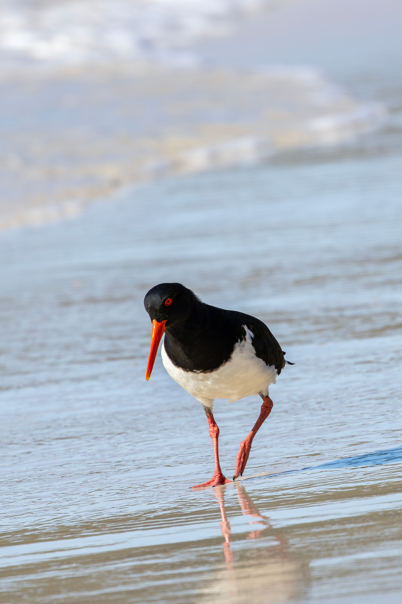

The Pied Oystercatcher is a large Australian shorebird with black upperparts, white underparts, a long orange-red bill and pinkish-red legs. It forages along sandy and muddy shores, using its powerful bill to open shellfish and probe for other invertebrates.
Pied Oystercatcher is best separated from Sooty Oystercatcher by looking at the overall shape and the strongest plumage pattern rather than one small mark. Compared with Sooty Oystercatcher, it has a different combination of colour, proportions and typical behaviour, which becomes clearer when the whole bird is visible. Black Oystercatcher can also resemble it in some settings, but differences in bill shape, tail length, wing pattern, posture or habitat can help narrow the identification. Calls and behaviour are useful supporting clues when plumage is difficult to see, especially for birds that spend much of their time in dense vegetation. Using several features together is more reliable than identifying the bird from a single characteristic.
IOC World Bird List v15.2 — taxonomy and nomenclature, IUCN Red List of Threatened Species — global conservation status, BirdLife International — species distribution, ecology and conservation, eBird / Cornell Lab of Ornithology — identification and life-history information